Oyna, Keşfet,
Eğlen.
Strateji, yarış, simülasyon ve daha fazlası.
15 oyun, tarayıcında, kurulum olmadan.
— Son Haberler
Borsa Kralı yayında! — İlk Godot Engine oyunumuz
💹 Lord of the Games artık sadece HTML5 değil: ilk Godot Engine oyunumuz Borsa Kralı yayında! 10 hisse + Bitcoin, canlı mum grafikleri, 1x-10x kaldıraç, haber akışı ve piyasayı sallayan söylentiler. 9.797 TL ile başla, alım-satım yaparak portföyünü büyüt ve borsanın kralı ol. Tamamen tarayıcıda, kurulum yok!
▶ Oyna / Oyunu gör
Minik Çiftlik yayında! — Rahatlatıcı çiftlik keyfi
🚜 İkinci Godot Engine oyunumuz Minik Çiftlik açıldı! Tohum ek, sula, hasat et; kazandığınla yeni tohumlar al ve çiftliğini adım adım büyüt. Sakin, rahatlatıcı ve bağımlılık yapan bir döngü. Tarayıcında hemen oyna!
▶ Oyna / Oyunu gör
Unity oyunları yayında: Ravenfield Web + Tower Defense 3D!
🔫 İki Unity Engine oyunu aynı anda yayında! Ravenfield Web'de mavi ve kırmızı ordular büyük savaş alanında karşı karşıya — bot destekli FPS aksiyonu. 🏰 Tower Defense 3D'de ise dalga dalga gelen düşmanlara karşı kule kurup yükseltiyorsun: 3 harita, zorluk seçenekleri, görevler ve başarımlar. İkisi de tarayıcında, kurulum yok!
▶ Tower Defense'i Oyna ▶ Ravenfield'ı Oyna
Futbol Manager — v3.0: 3D Stadyum + FM Taktik!
🏟️ Maça girince artık gerçek bir 3D stadyumda doğuyorsun: çim şeritli saha, tribünler, ışık kuleleri ve önünde maçı yansıtan dev jumbotron ekran. Sahada 22 gerçek 3B oyuncu koşuyor; kamerayı 📺 ekran, 📐 kenar, 🎥 geniş ve 🕹️ serbest modları arasında değiştir. ⚙️ FM tarzı detaylı taktik merkezi: pres tetikleyici, ofsayt tuzağı, oyuncu görevleri ve her ayarın maça etkisini (xG, şut, hakimiyet) gösteren canlı önizleme. 🧙 Danışman Baldric saha kenarından canlı analiz ve değişiklik önerisi veriyor.
▶ Oyna / Oyunu gör
TURBO RUSH — v1.9: Kontrol & AI Düzeltmeleri
🔄 Yön kontrolü düzeltildi: A/sol artık gerçekten sola, D/sağ sağa. 🏁 Yarış 3-2-1-GO! geri sayımıyla başlıyor, erken kalkış yok. ↩️ Geri vites eklendi — duvara çarpıp sıkışmazsın. 🤖 NPC araçların hızları artık birbirinden belirgin farklı ve her biri ayrı şeritte sürüyor; eskiden merkeze yığılıp üst üste biniyorlardı, artık dağılarak gerçek bir yarış havası veriyor. 🏎️ Araçlar virajda hafifçe yana yatıyor.
▶ Oyna / Oyunu gör
Strateji 1936 — v2.2: Ülke Yönetimi + Yeni Harita!
🏛 Oyun artık sadece savaş değil! 4 yeni yönetim sekmesi: 💰 Ekonomi & Bütçe (vergi oranı, ordu bakım gideri, net bütçe), 🏭 Sanayi & Üretim (fabrika kurma, ekonomi politikası), 🏛 Politika & Stabilite (hükümet tipleri, isyan riski, propaganda), 🤝 Diplomasi (ilişki, ticaret, saldırmazlık paktı, ittifak — müttefikin yanında savaşır). 🎨 Harita yenilendi: fethettiğin ülkenin toprağı SENİN rengine dönüyor, kendi sınırların altın, renkler daha canlı.
▶ Oyna / Oyunu gör
Lord of Nations — v1.5: Kanun & Politika Sistemi!
⚖️ Yepyeni Kanunlar sistemi! Artık ülkeni yasalarla yönetiyorsun: 16 farklı kanun, 4 kategoride — ⚔️ Askeri (Zorunlu Askerlik, Profesyonel Ordu, Gazi Hakları…), 💼 Ekonomi (Serbest Ticaret, Sübvansiyon, Artan Oranlı Vergi…), ❤️ Sosyal (Basın Özgürlüğü, Genel Sağlık, Zorunlu Eğitim…) ve ⚖️ Adalet & Bilim (Liyakat, Yolsuzlukla Mücadele, AR-GE Fonu…). Her kanunun mutluluk, moral, altın, sanayi, bilim, yolsuzluk ve itibar üzerinde aylık etkisi var; panelde yürürlüktekilerin net etkisini canlı görürsün. Ülkeni asker gücüne mi yoksa refaha mı göre kur — seçim senin.
▶ Oyna / Oyunu gör
Minecraft 2D Pro — v3.0: Hikaye Modu + Mobil!
📖 Hikaye Modu eklendi: Buz Kalesi'nde Kral Varran ile uyan, Baldric'in işgaline karşı 6 görev (taş kır, kılıç yap, zombi öldür, batıya yürü). 🌍 Serbest Mod ile klasik açık dünya. 🤴 Kral karakteri + seçenekli diyaloglar. 📱 Tam mobil dokunmatik kontrol. 🔧 Crafting table bugu düzeltildi — sağ tıkla artık 3x3 üretim grid'i açılıyor.
▶ Oyna / Oyunu gör
Futbol Manager — v2.8: Canlı Maç İstatistikleri!
🩹 Sarı/kırmızı kart, sakatlık, korner, kaleci kurtarışı, kayarak müdahale eklendi. 📊 Maç ekranında canlı istatistik paneli: topla oynama %, şut, isabet, kurtarış, faul, kart sayaçları. 🎤 Spiker senaryosu 40 farklı cümleye çıktı. ⚡ Maç ekranı kararma bugu düzeltildi.
▶ Oyna / Oyunu gör
Kale Savunma — v4.0: 3D Grafik + Kampanya + Kalıcı Yükseltme!
🎮 Oyun artık 3D! Three.js WebGL katmanıyla derinlikli, ışıklı bir savaş alanı. 📖 Kampanya Modu: bölüm seçim ekranından ilerle, her bölüm sonunda hikaye devam etsin + ♾️ Sonsuz Mod. 💎 Kalıcı Yükseltmeler dükkanı: oyunlar arası kaybolmayan kalıcı güçlenmeler biriktir, her yeni oyuna daha güçlü başla. 🌍 5 dil desteği: TR / EN / DE / FR / ZH. Ayrıca 5 karakterli hikaye (🧙♂️ Baldric, 🛡️ Sör Roric, 👸 Elara, 🤡 Quill, 🧝♀️ Lyra), dallanan evrim ağacı ve yeniden çizilen düşman grafikleri korunuyor.
▶ Oyna / Oyunu gör
Strateji 1936 — v2.1: Toplu Saldırı!
⚔ TOPLU SALDIRI eklendi: tek tek tümen göndermenin saçmalığı bitti. Bir şehirde 2+ tümen varsa Ordu sekmesinde altın panel çıkar, birleşik ⚔/🛡 güç gösterilir, "HEPSİYLE → şehir" butonuyla tek tıkta tüm stack birlikte saldırır. 10 kişilik ordu = tek tokat.
▶ Oyna / Oyunu gör
Lord AI Pro — v2.8: Güncel Bilgi Tabanı!
🧠 Lord AI'nın bilgi tabanı en son sürümlere göre yenilendi: Kale Savunma v4.0 (3D + Kampanya + Kalıcı Yükseltme), Lord of Nations v1.5 (Kanun & Politika sistemi) ve BirdBlast v3.0 (3D + Bölüm 3). Bu oyunlar için taktik ve rehberler güncellendi.
▶ Lord AI'ya sor
BirdBlast — v3.0: 3D Grafik + Bölüm 3!
🎮 Oyun 3D'ye geçti: Three.js ile 3B sapan, bloklar ve domuzlar — atışlar artık gerçek derinlikte. 📖 Yeni hikaye bölümü, BÖLÜM 3 — YENİ KANATLAR: Grunk, Altın Yumurta'yı çalıp bir uzay gemisiyle kaçar, sürü peşine düşer. Önceki uzay seviyeleri, kum havuzu (sandbox) editörü ve farklı kuş türleri de yerinde.
▶ Oyna / Oyunu gör
War of Countries — Geçici olarak kapatıldı
Oyunda bir hata tespit edildi ve geçici olarak kapatıldı. En kısa sürede düzeltip tekrar açacağız. Anlayışın için teşekkürler!
⏸ Geçici olarak kapalı
— Tüm Oyunlar
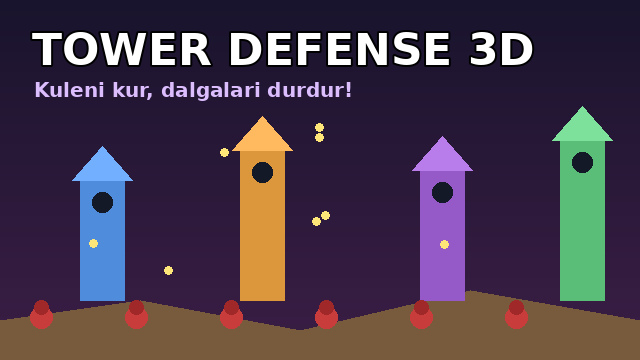
Tower Defense 3D — Kule Savunması
Dalga dalga gelen düşmanlara karşı kuleler kur, yükselt ve hattı tut! 3 harita, görevler & başarımlar. Unity Engine ile yapıldı.
▶ Oynav1.0
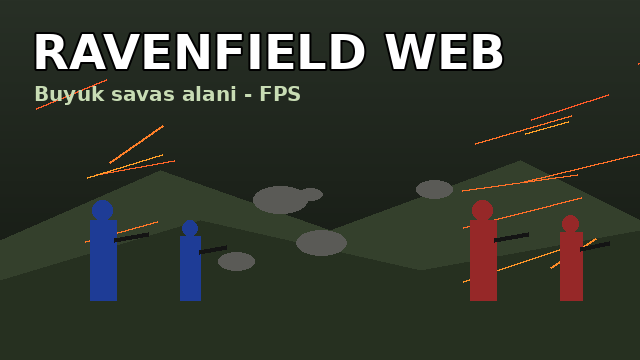
Ravenfield Web — Savaş Alanı
Mavi ve kırmızı ordular savaş alanında karşı karşıya! Bot destekli FPS savaşı — Unity Engine ile yapıldı. En iyi deneyim için PC önerilir.
▶ Oynav1.0
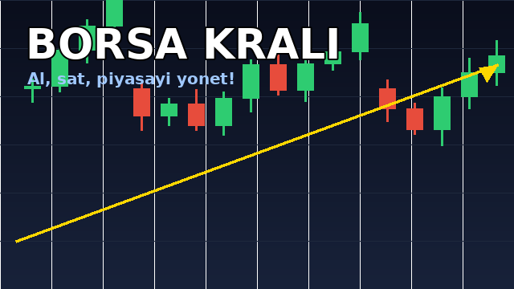
Borsa Kralı — Piyasa Simülasyonu
10 hisse + Bitcoin, canlı mum grafikleri, kaldıraç, haber akışı ve söylentiler. Portföyünü büyüt, borsanın kralı ol! Godot Engine ile yapıldı.
▶ Oynav1.0
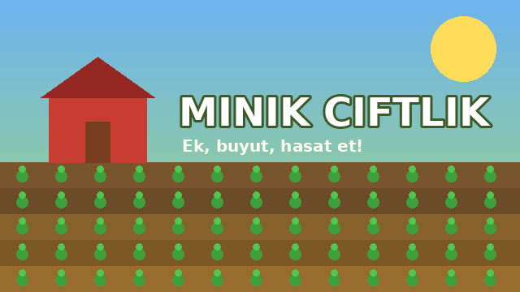
Minik Çiftlik
Tohum ek, sula, hasat et ve çiftliğini büyüt! Godot Engine ile yapılmış rahatlatıcı çiftlik oyunu.
▶ Oynav1.0
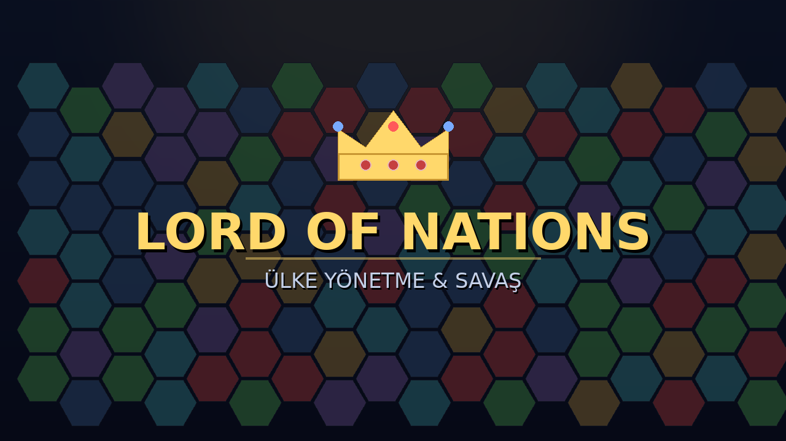
Lord of Nations — Ülke Yönetme
Bir ülke seç, ekonomiyi ve orduyu yönet, diplomasi kur ve savaşarak haritaya hükmet! 3D harita.
▶ Oynav1.4
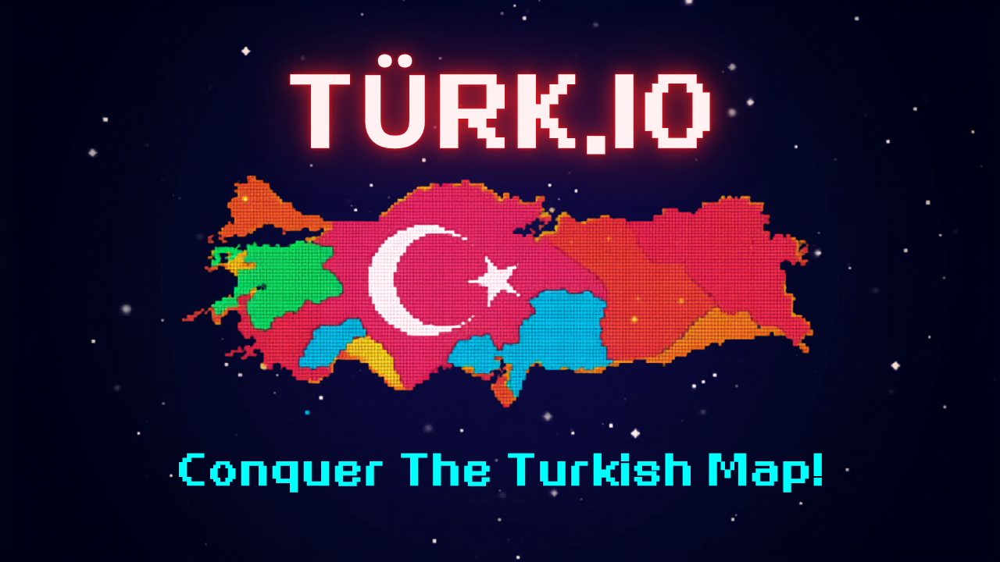
TÜRK.IO — Haritayı Fethettir
Haritada alan kazan, rakipleri sil, ülkeyi fethettir!
▶ Oynav1.5
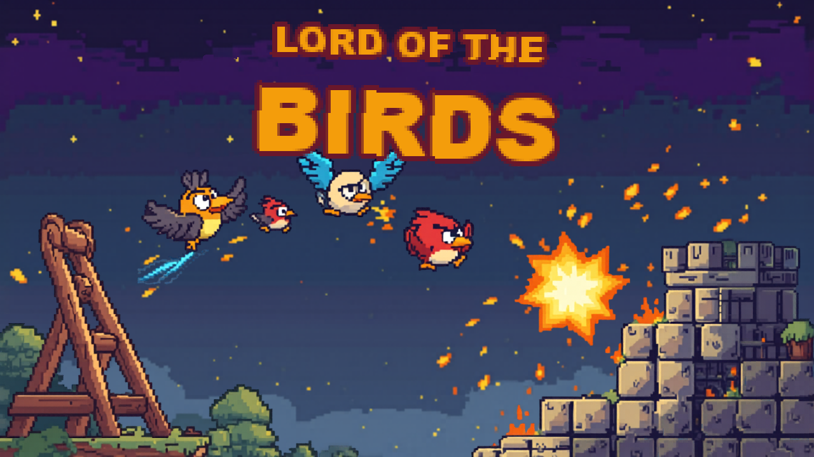
BirdBlast — Uzay & Kum Havuzu
Sapanı geri çek, kuşları fırlat, yapıları yık! Uzay seviyeleri & kum havuzu editörü!
▶ Oynav2.0
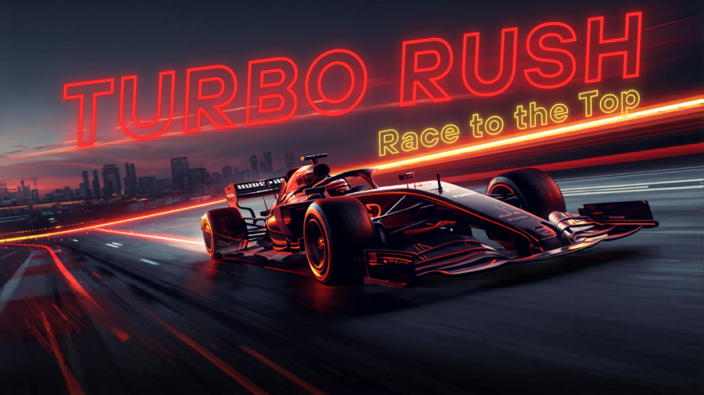
TURBO RUSH — Kariyer
F1 stili kariyer + DRİFT mekaniği. 5 pist, 8 takım, pit stop, mobil destek.
▶ Oynav1.8
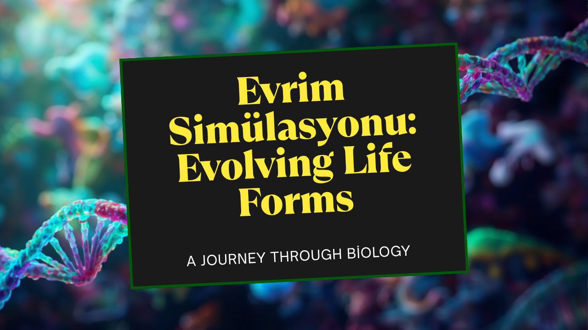
Evrim Simülasyonu v3
Doğal seçilim süreçlerini simüle et. Canlıların evrimini izle.
▶ Oynav2.0
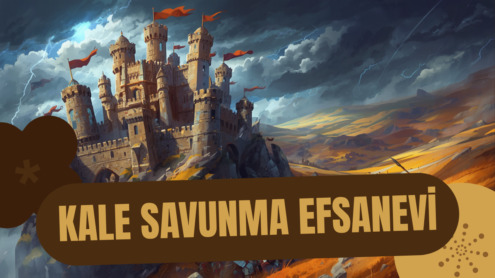
Kale Savunma: Krallık Çağı
Kaleyi korumak için kuleler inşa et. Mobil & PC uyumlu, yeni binalar ve evrim sistemi!
▶ Oynav1.7
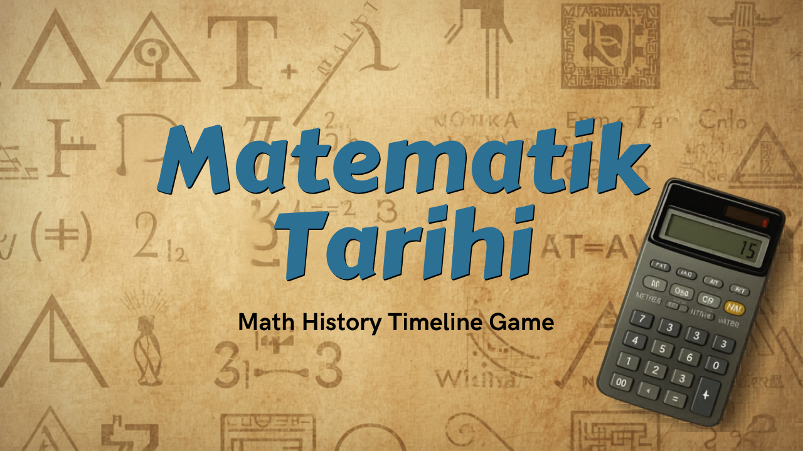
Matematik Tarihi: Zaman Çizelgesi
Matematiğin tarihini keşfet. Antik çağdan günümüze yolculuk.
▶ Oynav2.0
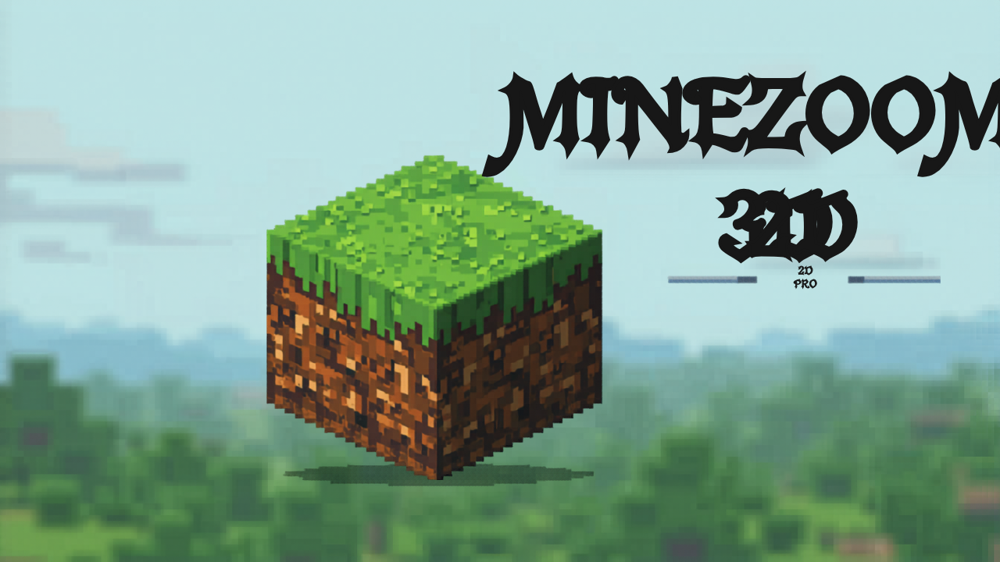
Minecraft 2D Pro
2D sandbox dünyada kazan, inşa et, hayatta kal.
▶ Oynav2.0
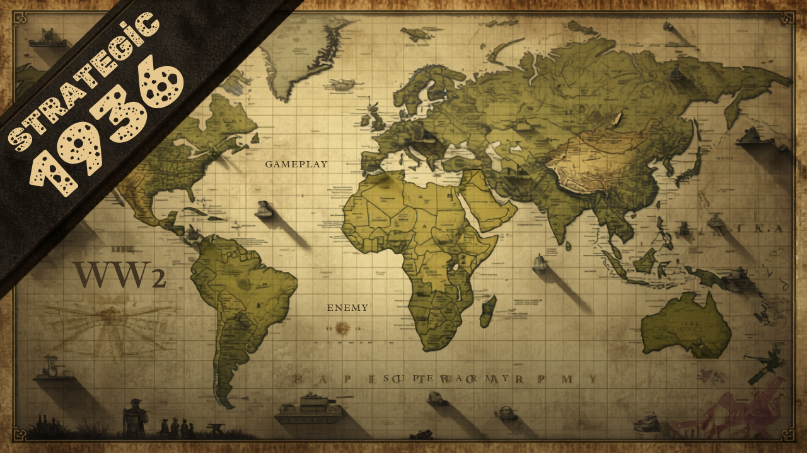
Strateji İmparatorluğu — 1936
~60 şehir, 5 tümen + XP, 5 dallı araştırma, vintage harita, mobil dokunmatik!
▶ Oynav2.0
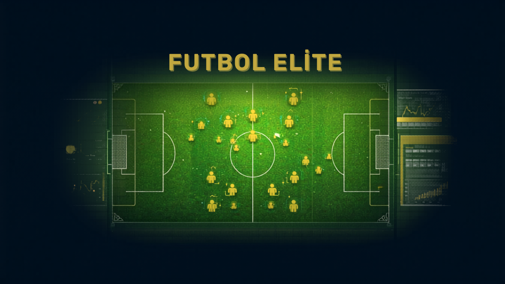
Futbol Manager Elite
Takımını yönet, taktik kur, şampiyonluğa ulaş! Yeni rol sistemi ve geliştirilmiş maç motoru!
▶ Oynav1.8
🔧 Bakımda
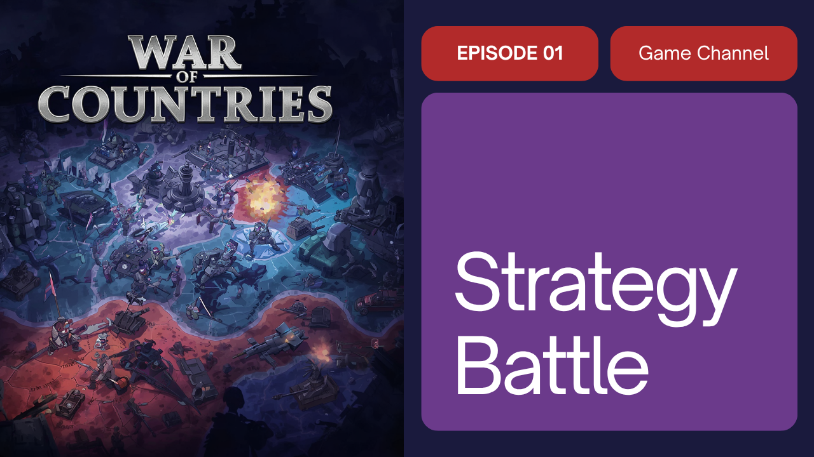
War of Countries
Bir hata tespit edildi, oyun geçici olarak kapatıldı. En kısa sürede tekrar açılacak!
⏸ Geçici olarak kapalıv1.6